Schedule Desk
Athletic-dept schedule hub: black mast + sport tabs + scarlet stats strip + full slate table.
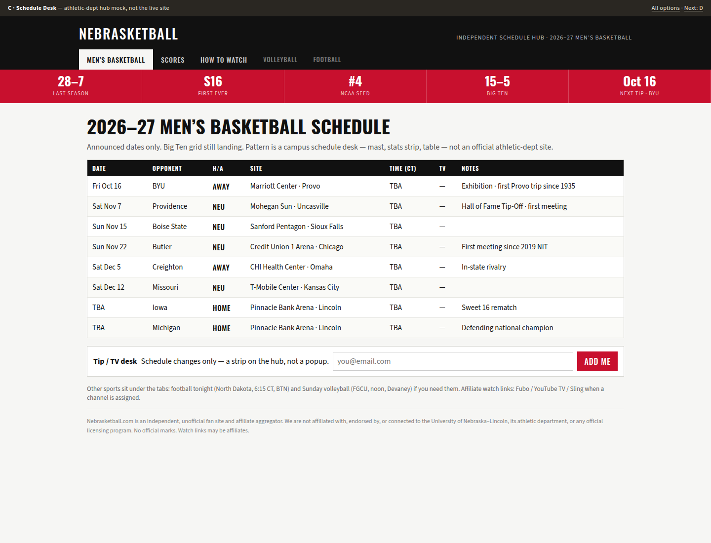
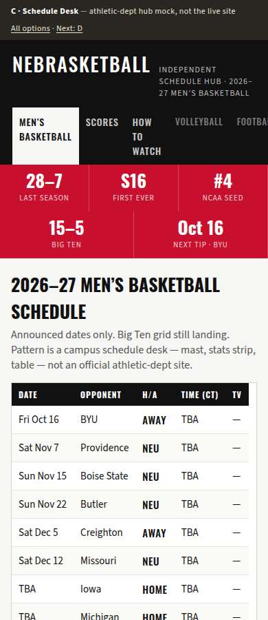
Static home mocks for CoS / Jeff. Basketball-first. Scarlet accent only. Hard UNL disclaimer on every page. Not huskers.com. Not rejected A (Scorebug Dense) or B (Rundown Editorial). Do not merge as production chrome.
Athletic-dept schedule hub: black mast + sport tabs + scarlet stats strip + full slate table.


ESPN/CBS chrome: horizontal scorecells, sticky game header, period boxes, play-by-play.
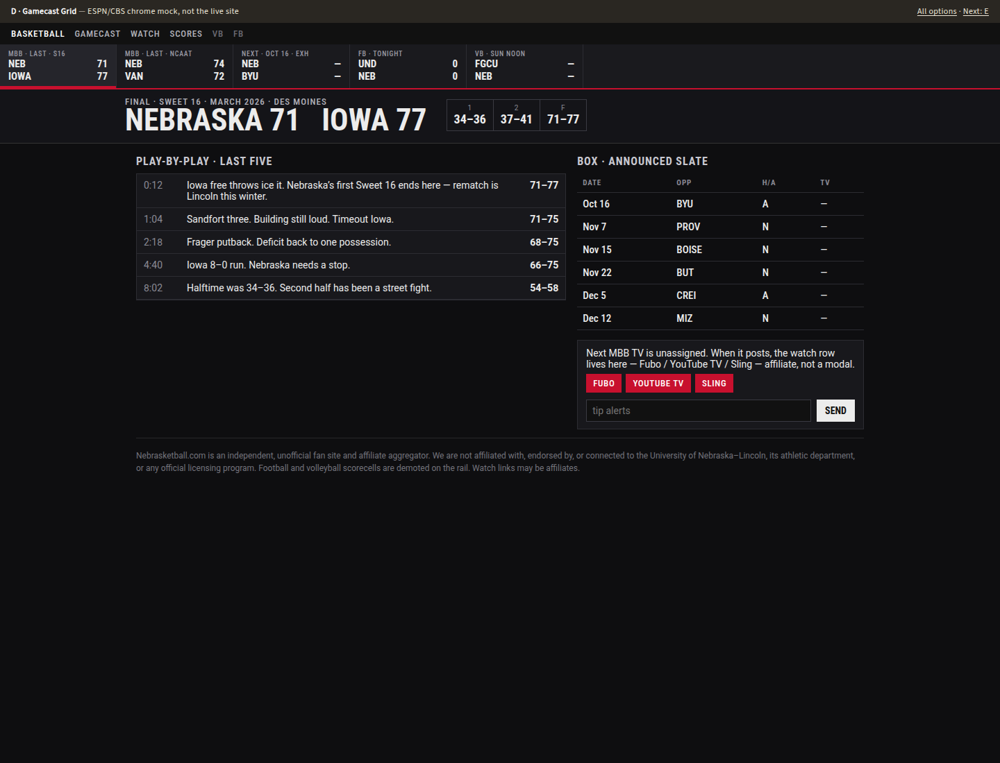
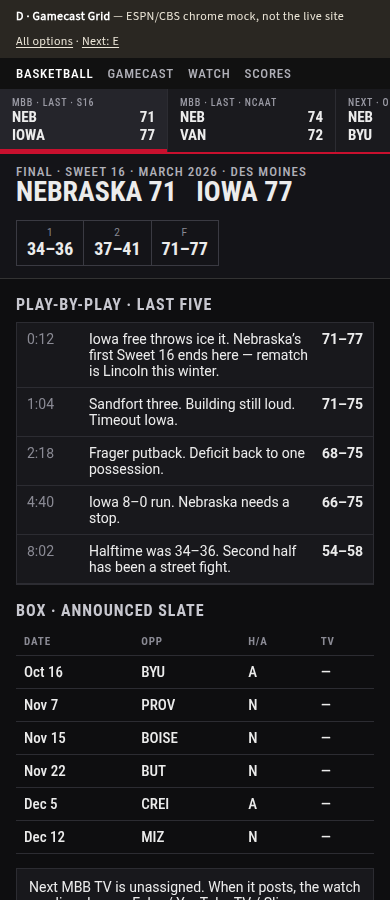
SB Nation stack: lead story + thumbnail river + right-rail scores — denser sports site, not newsprint.
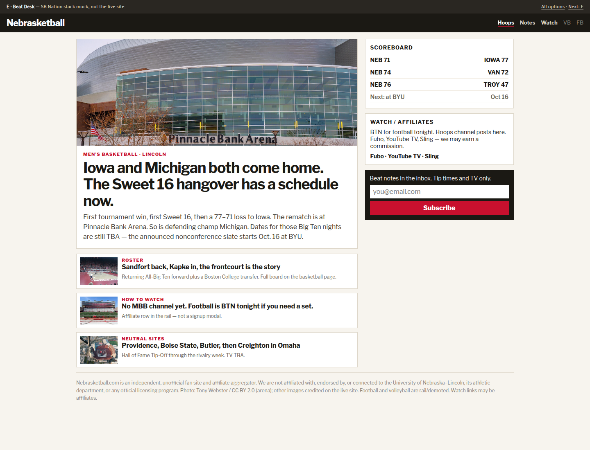
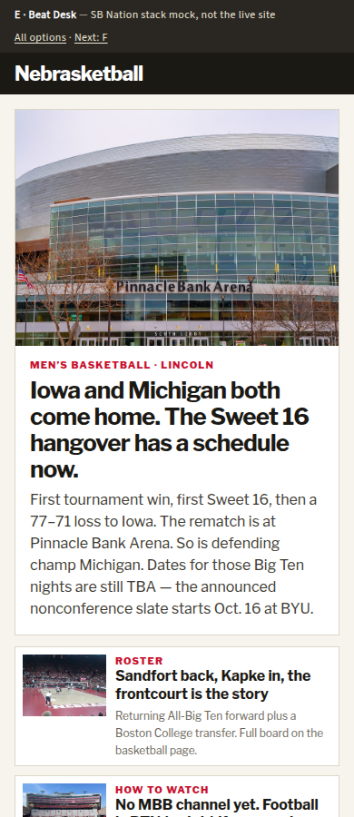
Photo-forward game-day: arena hero with overlay score, slate underneath — sports, not a museum splash.
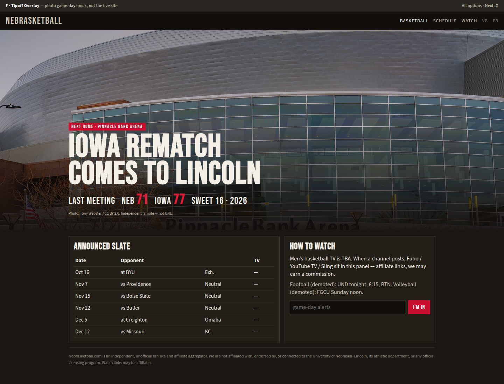
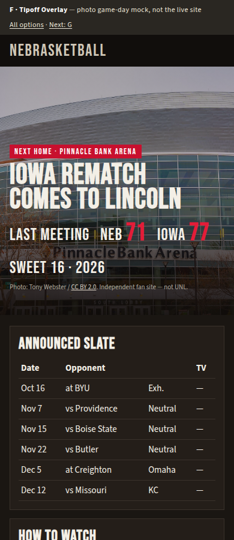
Dark stadium chrome: night photo, LED stat chips, scarlet pinstripe energy.
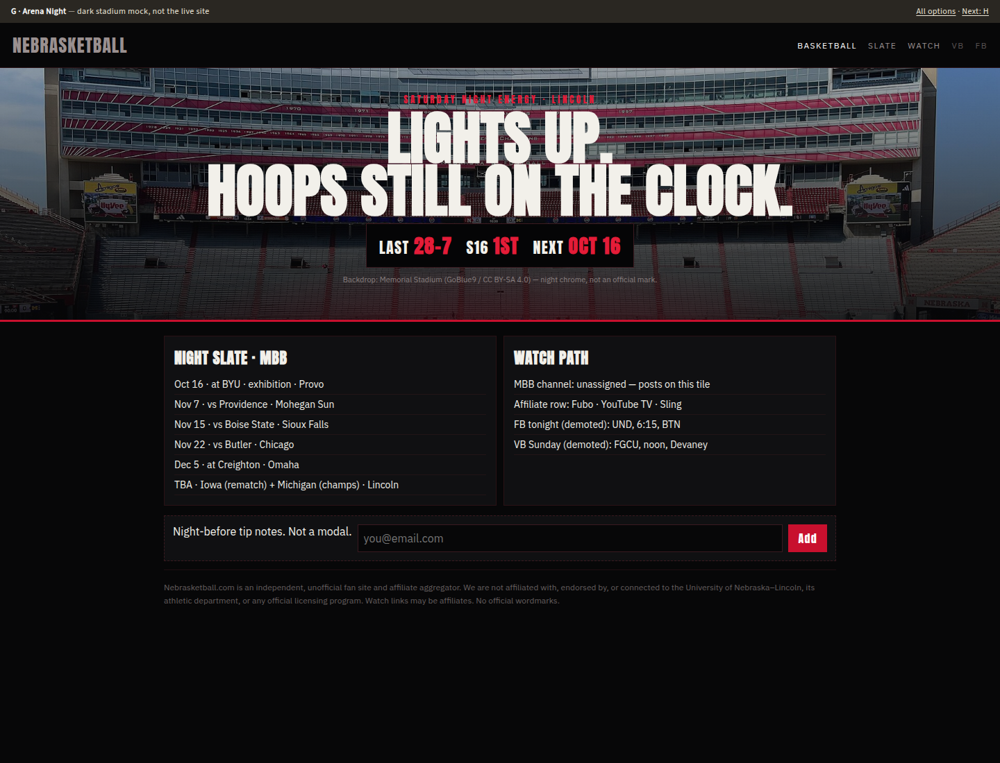
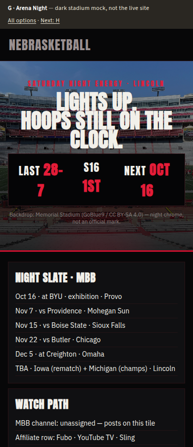
Print sports page: nameplate + three-column agate tables and box scores, not an editorial column.
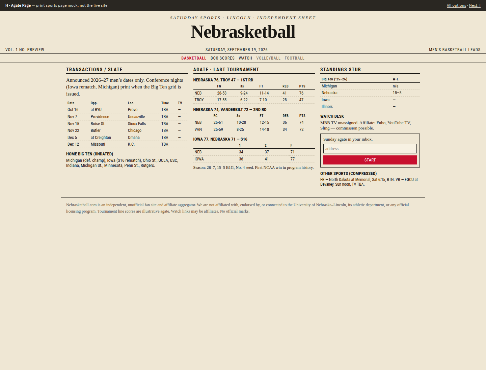
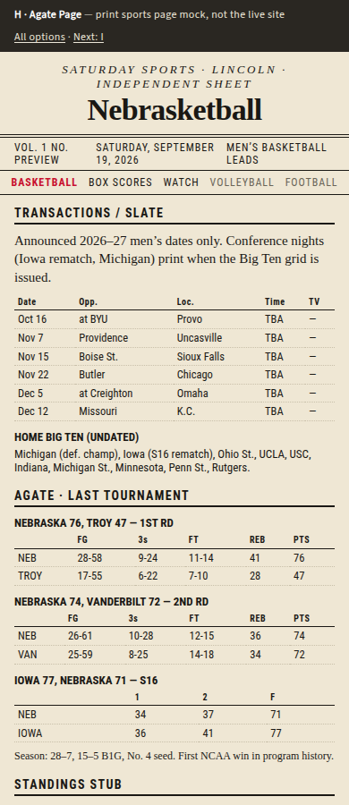
Radio booth wildcard: yellow legal pad, timed cues, outcues — a show sheet, not a rundown list.
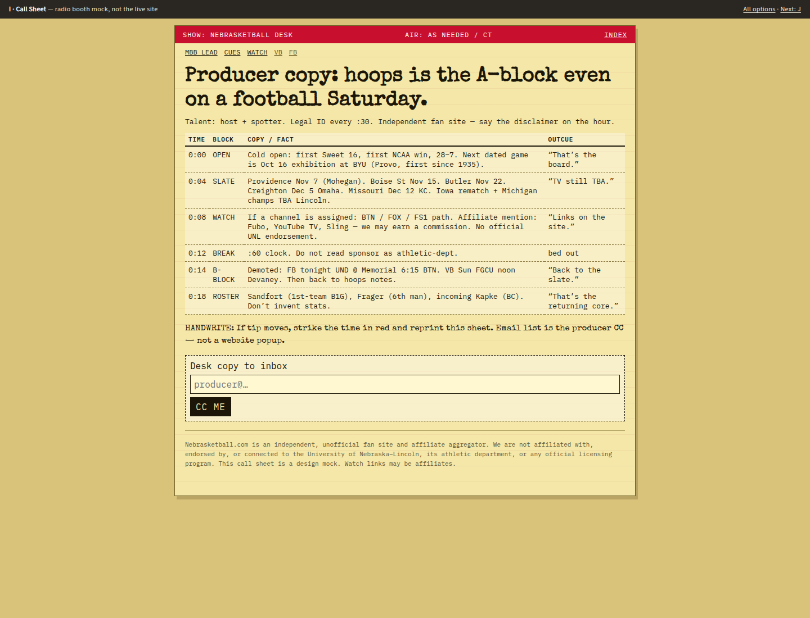
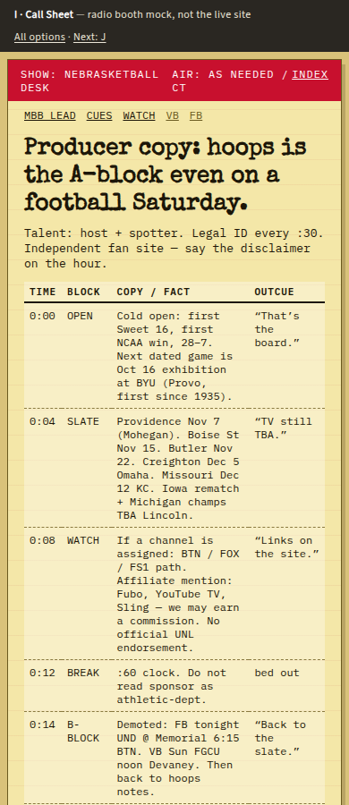
Recruiting-board wildcard: cork-board cards for returners/transfers plus the dated game list.
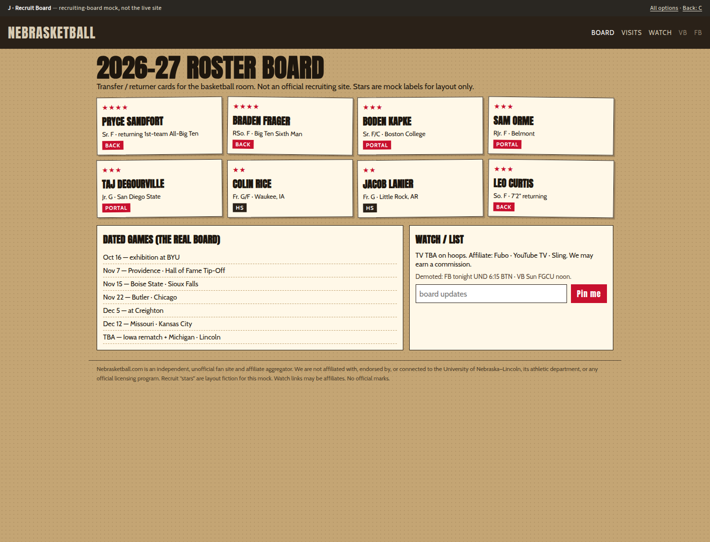
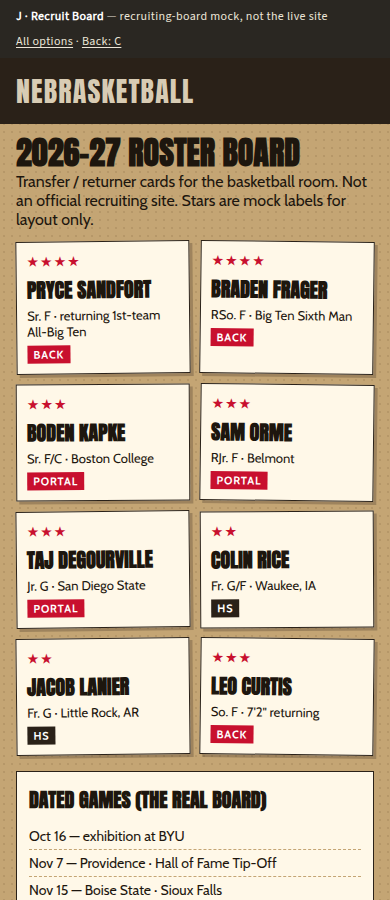
Nebrasketball.com is an independent, unofficial fan site. Not affiliated with UNL. These files are noindex previews under /design-options-v2/.